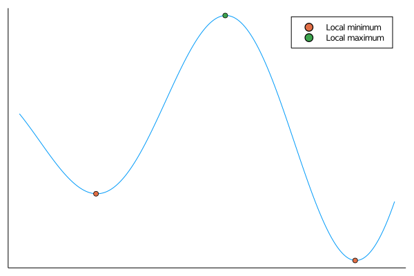
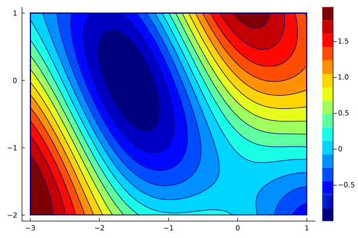
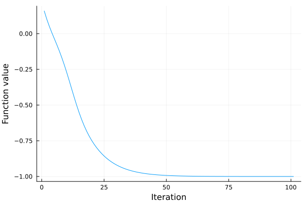
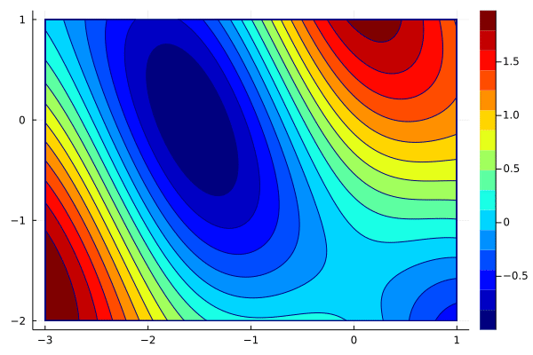

Unconstrained optimization
Unconstrained optimization means that we optimize a function on the whole space $X=\mathbb{R}^n$. Then the optimization problem reduces to
\[ \text{minimize}\qquad f(x).\]
What do we look for when we minimize a function $f$ over some $X$? The optimal point would be a global minimum, which is a point $x\in X$ which satisfies
\[f(x) \le f(y) \text{ for all }y\in X.\]
This point is often challenging to find. Sometimes we can find a local minimum, which is a global minimum on some small neighbourhood of $x$. However, as the following theorem suggests, we often need to lower our requirements even lower.
Consider a differentiable function $f$ over $X=\mathbb{R}^n$. If $x$ is its local minimum, then $\nabla f(x)=0$. Conversely, if $f$ is convex, then every point $x$ with $\nabla f(x)=0$ is a global minimum of $f$.
Points with $\nabla f(x)=0$ are known as stationary points. Optimization algorithms often try to find local minima or stationary points, hoping to minimize the function $f$. The reason is the following: To optimize $f$, we can evaluate it only at a limited number of points. Since evaluating $f$ at a point conveys only information about the function value at this point or its small neighbourhood, we collect only local information about $f$. Therefore, unless $f$ has a special structure, it is possible to obtain global results from only local evaluations.

This theorem does not hold if $X$ is not the whole space. A simple counterexmple is minimization of $f(x)=x$ on $X=[0,1]$.
Since the gradient is the direction of the steepest ascent, the straightforward idea is to move in the opposite direction. This gives rise to the gradient (or steepest) descent algorithm
\[x^{k+1} = x^k - \alpha^k\nabla f(x^k),\]
where $\alpha_k>0$ is called stepsize. If this update converges, then $x^{k+1}$ and $x^k$ are close to each other, and therefore $\nabla f(x^k)\to 0$. This means that this method converges to a stationary point.
The stepsize $\alpha^k>0$ is usually fixed and determined before the optimization is started. However, some methods use an automatic selection of the stepsize. One of the possibilities is the Armijo condition which looks for $\alpha^k$ satisfying
\[f(x^k - \alpha^k\nabla f(x^k)) \le f(x^k) - c \alpha^k \|\nabla f(x^k)\|^2.\]
Here $c\in(0,1)$ is a small constant, usually $c=10^{-4}$. Since the left-hand side is the function value at the new iterate $x^{k+1}$, the Armijo condition ensures that the sequence of function values is strictly decreasing. This prevents oscillations. Theoretical results ensure that there is some interval $(0,\alpha_0)$ such that any $\alpha$ from this interval satisfies the Armijo condition. Therefore, to find some $\alpha$ satisfying the Armijo conditions, we start with some $\alpha_{\rm max}$ and divide it by two until the condition is satisfied.
In classical optimization, the usual terminology is:
- Variable is to be optimized. The example would be $x$.
- Parameter is an external (fixed) parameter such as a material parameter. The example would be $\alpha$.
In machine learning, the usual terminology is:
- Parameter is to be optimized.
- Hyperparameter is an external model parameter that is not optimized and needs to be tuned. The example is the steplength because the gradient descent finds a different solution for different steplength, but it is not changed during the optimization.
The different terminology (and possibly the fact that there are adaptive schemes to select the steplength, which should make it a parameter instead of a hyperparameter) makes the notation confusing.
Gradient descent
In this section, we will implement the gradient descent method.
Implement function optim, which takes as inputs function $f$, its gradient, starting point $x^0$ and fixed stepsize $\alpha$ and runs the gradient descent. Its output should be the first 100 iterations.
This example is rather artificial because usually only the last iteration is returned and some stopping criterion is employed instead of the fixed number of iterations. We want to get all iterations to make visualizations.
Solution:
First we need to create an empty array into which we store the data. Then at every iteration we compute the gradient g(x), perform the update and save the new value of $x$.
function optim(f, g, x, α; max_iter=100)
xs = zeros(length(x), max_iter+1)
xs[:,1] = x
for i in 1:max_iter
x -= α*g(x)
xs[:,i+1] = x
end
return xs
endThe implementation does not use the values of $f$ but only its gradient $\nabla f$. If the algorithm converges $x^k \to \bar x$, then passing to the limit in the gradient update results in $\nabla f(\bar x)=0$. Therefore, as with most optimization methods, gradient descent looks for stationary points.
Before plotting the path taken by gradient descent, we create the create_anim function, which creates animations of path over the contour plot of f. From xlims and ylim, it creates discretizations xs and ys and then plots the contour plot as background. Since Animation requires updating a graph, we start with an empty graph, and we push a new image to the animation in every iteration. The final command gif saves the animation into file_name.
using Random
function create_anim(
f,
path,
xlims,
ylims,
file_name = joinpath(pwd(), randstring(12) * ".gif");
xbounds = xlims,
ybounds = ylims,
fps = 15,
)
xs = range(xlims...; length = 100)
ys = range(ylims...; length = 100)
plt = contourf(xs, ys, f; color = :jet)
# add constraints if provided
if !(xbounds == xlims && ybounds == ylims)
x_rect = [xbounds[1]; xbounds[2]; xbounds[2]; xbounds[1]; xbounds[1]]
y_rect = [ybounds[1]; ybounds[1]; ybounds[2]; ybounds[2]; ybounds[1]]
plot!(x_rect, y_rect; line = (2, :dash, :red), label="")
end
# add an empty plot
plot!(Float64[], Float64[]; line = (4, :arrow, :black), label = "")
# extract the last plot series
plt_path = plt.series_list[end]
# create the animation and save it
anim = Animation()
for x in eachcol(path)
push!(plt_path, x[1], x[2]) # add a new point
frame(anim)
end
gif(anim, file_name; fps = fps, show_msg = false)
return nothing
endWe now plot how gradient descent behaves.
Use the implementation of the gradient descent to minimize the function
\[f(x) = \sin(x_1 + x_2) + \cos(x_1)^2\]
from the starting point $x^0=(0,-1)$. Use the constant stepsize $\alpha=0.1$. Store all iterations into matrix xs.
Use the create_anim function to plot the iteration into a gif file.
Use one line of code to evaluate the function values for all iterations xs and plot these function values.
Hint: to evaluate all $xs$ in one line, use iterate either via eachcol(xs) or eachrow(xs).
Solution:
We call optim from the previous exercise and then create the animation.
x_gd = optim([], g, [0; -1], 0.1)
xlims = (-3, 1)
ylims = (-2, 1)
create_anim(f, x_gd, xlims, ylims, "anim1.gif")To plot the function values, we need to iterate over all columns. We use [? for x in eachcol(x_gd)] and apply f(x) instead of ?. Another (more complicated) way is to iterate over indices instead of vectors and write [f(x_gs[:,i]) for i in 1:size(x_gd,2)].
f_gd = [f(x) for x in eachcol(x_gd)]
plot(f_gd, label="", xlabel="Iteration", ylabel="Function value")"/home/runner/work/Julia-for-Optimization-and-Learning/Julia-for-Optimization-and-Learning/docs/build/lecture_08/obj.svg" 
The convergence looks very nice, and the function value decreases. Initially, the decrease is faster, but it slows down when the iterations get closer to the minimum.
What happens if we choose a different stepsize? Let us try with two different values. First let us try $\alpha=0.01$.
x_gd = optim([], g, [0; -1], 0.01)
create_anim(f, x_gd, xlims, ylims, "anim2.gif")When the stepsize is reduced, the steps are shorter, and we would need to increase the number of iterations (and thus the computational time) to converge. When the stepsize is larger, say $\alpha=1$, the situation is different.
x_gd = optim([], g, [0; -1], 1)
create_anim(f, x_gd, xlims, ylims, "anim3.gif")For a large stepsize, the algorithm gets close to the solution and then starts jumping around. If we further increase the stepsize, the algorithm will even diverge. Try it.
Adaptive stepsize
The implementation of optim(f, g, x, α; max_iter=100) does not allow modifying the step selection. The simplest fix would be to include if conditions inside the function. However, this would result in a long function, which may be difficult to debug and modify. A more elegant solution is to create an abstract type.
abstract type Step endFor each possible step selection technique, we implement an optim_step method selecting the step. First, we create the gradient descent type GD as a subtype of Step by
struct GD <: Step
α::Float64
endIt is a structure with parameter α. Then we create the optim_step function by
optim_step(s::GD, f, g, x) = -s.α*g(x)Due to the first input argument, it will be called only for the GD stepsize. To access the parameter α, we need to retrieve it from the structure by s.α. Now we can modify the optim function by
function optim(f, g, x, s::Step; max_iter=100)
xs = zeros(length(x), max_iter+1)
xs[:,1] = x
for i in 1:max_iter
x += optim_step(s, f, g, x)
xs[:,i+1] = x
end
return xs
endThe specification of the input s::Step allows for any subtype of the abstract type Step. Using this implentation results in
gd = GD(0.1)
x_opt = optim(f, g, [0;-1], gd)
create_anim(f, x_opt, xlims, ylims, "anim4.gif")
The result is the same as in the previous case. This is not surprising as the code does the same things; it is only written differently. The following exercise shows the power of defining the Step type.
Implement the Armijo subtype of the Step type. It should have two parameters c from the definition and α_max which will be the initial value of $\alpha$. The value $\alpha$ should be divided by two until the Armijo condition is satisfied.
Then run the optimization with the Armijo stepsize selection and plot the animation.
Solution:
We define the type in the same way as for GD:
struct Armijo <: Step
c::Float64
α_max::Float64
endFor the search for the stepsize, we first save the values for the function value $f(x)$ and the gradient $\nabla f(x)$. If we do not do this, it will be recomputed at every step. Then we initialize the value of $\alpha$ and run the while loop until the Armijo condition is satisfied. We add a termination condition α <= 1e-6 to prevent the loop from continuing indefinitely.
function optim_step(s::Armijo, f, g, x)
fun = f(x)
grad = g(x)
α = s.α_max
while f(x .- α*grad) > fun - s.c*α*(grad'*grad)
α /= 2
if α <= 1e-6
warning("Armijo line search failed.")
break
end
end
return -α*grad
endThen we create the Armijo struct and run the optimization.
gd = Armijo(1e-4, 1)
x_opt = optim(f, g, [0;-1], gd)
create_anim(f, x_opt, xlims, ylims, "anim5.gif")Since the Armijo condition determines the optimal stepsize automatically, the convergence is much faster than for gradient descent. Moreover, it is not necessary to specify the stepsize. The price to pay is that every iteration needs to perform several function evaluations, which is not the case for standard gradient descent.